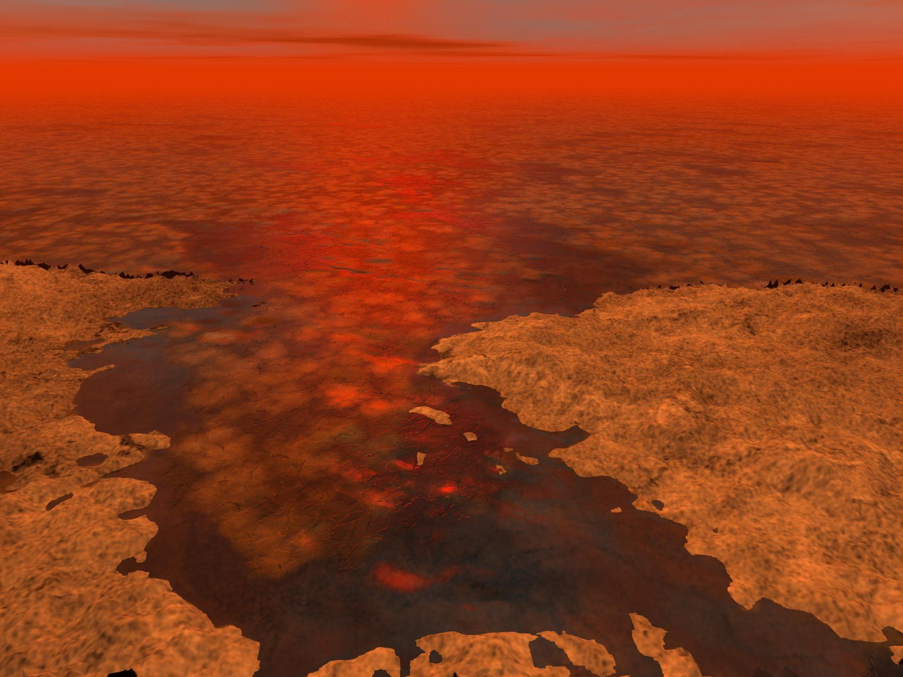

The cosmic gardener ventures onward to Titan, the largest of Saturn's 83 moons. Shrouded in mystery, this is a veiled world of golden haze. Smog-like aerosols form dense nitrogenous clouds that shield the colossal moon, trapping heat against its surface and elevating temperatures to -179°C. Despite being 100 times farther from the Sun than Earth, Titan is exposed to high radiation from decaying radioactive elements in its interior and high-energy particles in Saturn's magnetosphere.
Stable liquid hydrocarbon rivers cut across high-elevation landscapes, pooling into lower-level lakes and seas of methane and ethane. And albeit chilly, Titan's surface is Earthlike, with hydrological cycles, monsoonal rains, and dust storms. Ice volcanoes spit ammonia, water, and methane from a subsurface ocean into the sky, replenishing the atmosphere. However, the unique features of Titan present significant challenges for the survival of potential life, including radiation, frigid temperatures, low oxygen, limited sunlight, and high levels of methane. Despite these challenges, there is potential for the survival of facultative methanotrophs, microorganisms that anaerobically feed on methane, such as Methylocystis sp. strain M.
Floating Ice on Titan's Lakes, Concept Art, source: NASA/JPL-Caltech/USGS
With biotechnological advancements and genetic engineering, it may be possible to enhance cold- and radiation-resistant pathways within Methylocystis sp. strain M to enable its survival in Titan's harsh environment. Although a long shot, the survival of methanotrophs on Titan could serve as a testament to life's tenacity, defying the harshest conditions to persist in the far reaches of the cosmic garden.
A Cosmic Gardner exploring methan Lake of Titan, source: MidJourneyAI